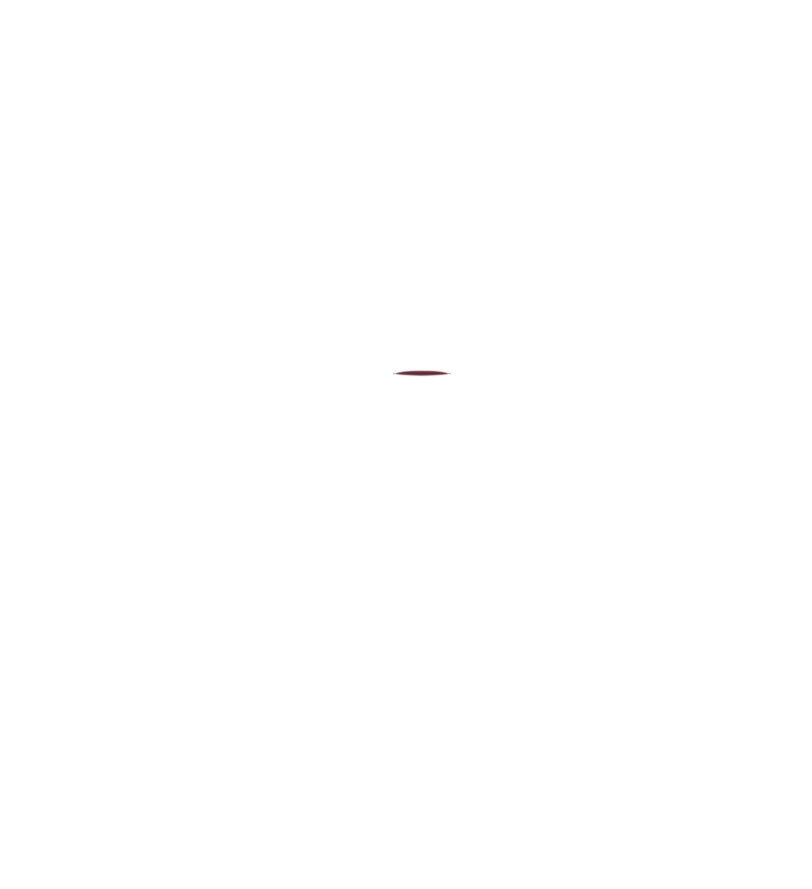

Preview sequence, looping with soft transitions:
RestSlightMediumWideMediumSlightRest
The resting view shows the original portrait pixels without an overlay. All mouth layers are transparent PNGs aligned to the original canvas.